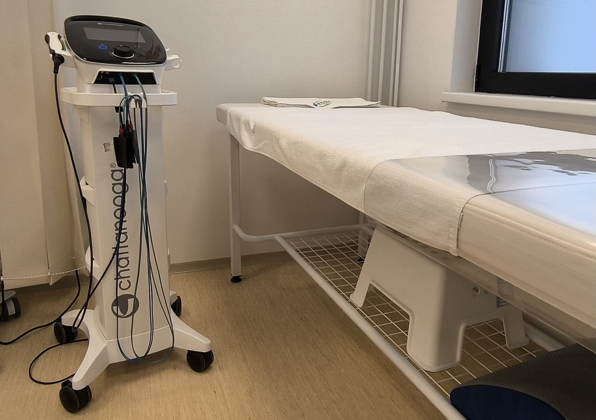
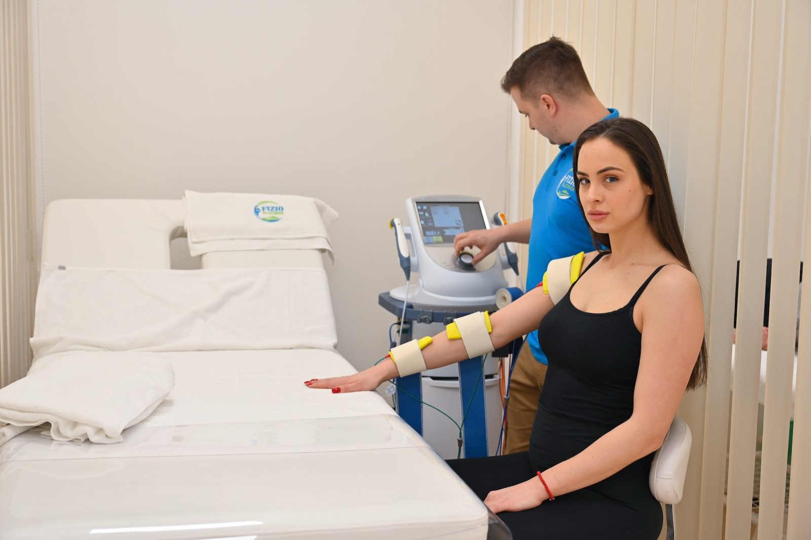

Elektroterapija — ciljano na bol, otok i oslabljene mišiće
Elektroterapija koristi nežne terapeutske struje koje prolaze kroz kožu preko malih lepljivih elektroda i deluju tačno tamo gde vas boli ili gde mišić ne radi kako treba. Različite vrste struja imaju različit „posao": jedne smanjuju bol bez tableta, druge pomažu da otok brže splasne, treće „bude" mišić koji je posle gipsa ili operacije prestao da se uključuje. U većini slučajeva osetićete prijatno peckanje ili lagano ritmično trzanje mišića — nikada bol.

Kako izgleda tretman
Postavljanje elektroda
Male lepljive elektrode postavljamo na čistu kožu, tačno oko bolnog mesta ili preko mišića koji aktiviramo. Postavljanje je bezbolno i traje minut–dva.
Prijatno peckanje ili „pulsiranje"
Polako podižemo intenzitet do nivoa koji je vama prijatan — peckanje za smanjenje bola, ili lagani ritmični stezaj mišića kada radimo na snazi. Nikada ne sme da boli.
Često uz druge tretmane
Elektroterapija se lako kombinuje sa magnetom, laserom, ultrazvukom ili vežbama istog dana. Vi se odmarate dok struja radi svoj posao.
Najbolje indikacije
Najčešći razlozi zbog kojih ljudi dolaze na elektroterapiju — uz prethodnu procenu i, kada je potrebno, nalaz lekara.
Bol i otok
- Akutni i hronični bol u krstima, vratu, ramenu ili kolenu
- Bol posle povrede — uganuća, nagnječenja, manje traume
- Postoperativni bol (koleno, rame, kuk) — uz dogovor sa lekarom
- Otok posle povrede ili operacije (high‑volt protokoli)
- Išijas i radikulopatija sa potvrđenom dijagnozom
- Tenzione, cervikogene glavobolje (nakon pregleda)
Mišići i povratak funkciji
- Oslabljen i smanjen mišić posle gipsa ili duže imobilizacije
- Aktivacija kvadricepsa posle operacije kolena / ACL rekonstrukcije
- Vraćanje snage ramena posle operacije ili duže nepokretnosti
- Trening mišića karličnog dna — blaga stres‑inkontinencija
- Spasticitet posle moždanog udara (kod odabranih pacijenata)
- Sportski oporavak — upala mišića posle treninga (DOMS), zamor i ukočenost
Parametri tretmana
Polazne vrednosti — vrstu struje, intenzitet i trajanje uvek prilagođavamo vašoj dijagnozi i osetu na samom tretmanu.
- Trajanje sesije
- 10–25 minuta po regiji
- Vrste struja
- TENS, IF, NMES/EMS, high‑volt, mikrostim
- Intenzitet
- prijatno peckanje ili pulsiranje — nikada bol
- Frekvencija
- 2–4 puta nedeljno
- Tipičan kurs
- 6–12 tretmana
- Procena toka
- pregled efekata na polovini kursa

Šta da očekujete
Nema posebne pripreme — obucite nešto u čemu se lako oslobađa predeo koji tretiramo (npr. majica kratkih rukava za rame, šorts ili helanke za koleno). Na čistu, suvu kožu postavljamo male lepljive elektrode, a intenzitet polako podižemo do nivoa koji je vama prijatan. Većina ljudi oseti olakšanje bola već posle 2–3 tretmana; kod jačanja oslabljenih mišića vidljiv napredak se gradi tokom celog kursa, najbolje uz vežbe koje dobijate uz tretman.
Kada elektroterapija nije za vas
Molimo vas da nam unapred kažete ako imate: pejsmejker ili drugi implantirani srčani uređaj, aktivnu malignu bolest u predelu tretmana, trudnoću (kod tretmana trupa), otvorenu ranu ili infekciju kože na mestu gde idu elektrode, skorašnji krvni ugrušak (DVT) ili tešku aritmiju. Elektrode nikada ne postavljamo preko grla, očiju ili direktno preko srca. Ako imate izrazito smanjen osećaj u koži (npr. posle moždanog udara, kod neuropatije), prvo proveravamo osetljivost na dodir kako bismo bezbedno dozirali intenzitet.